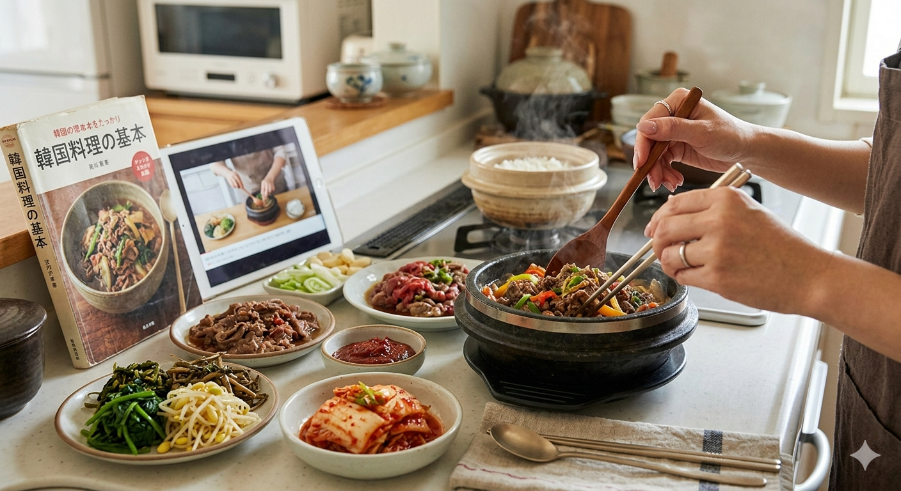
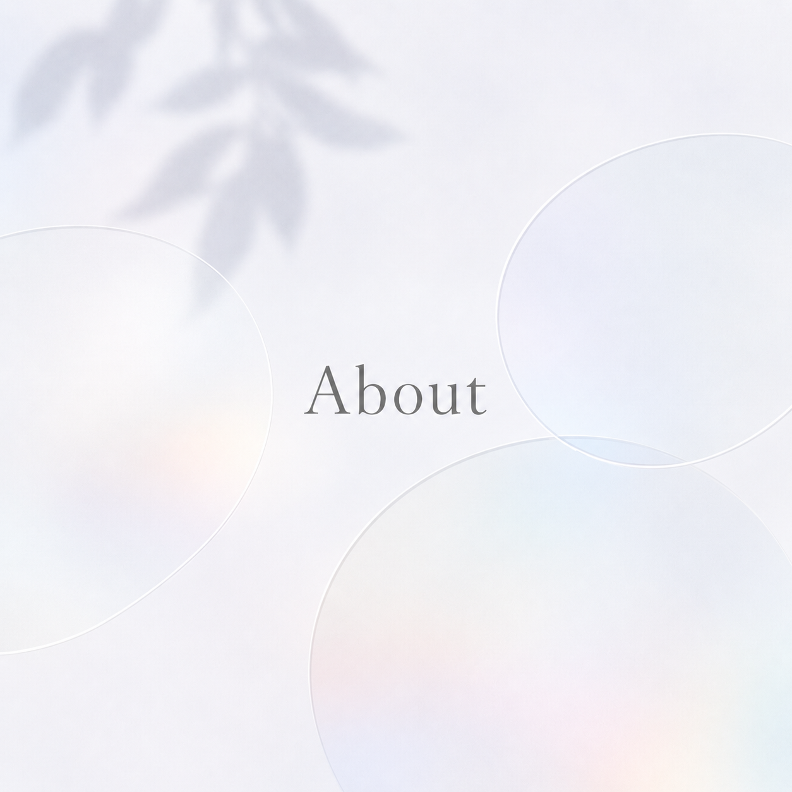
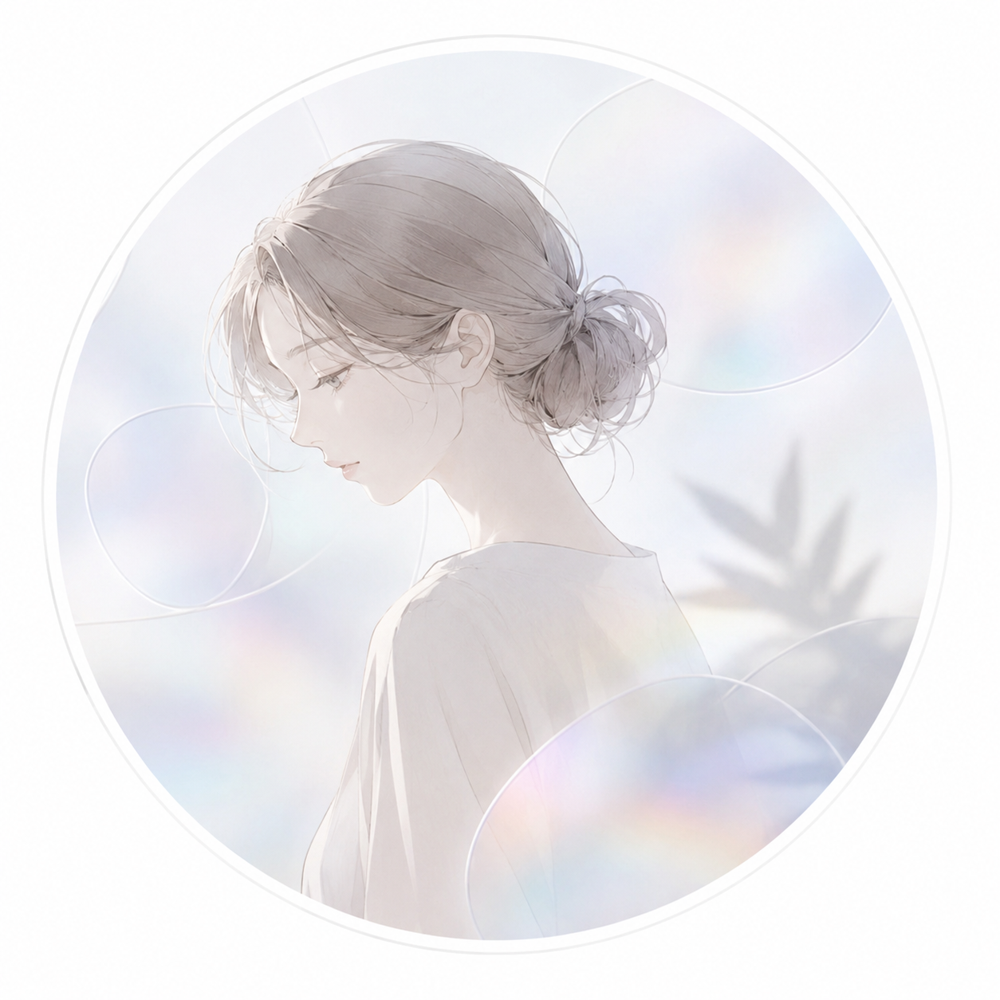
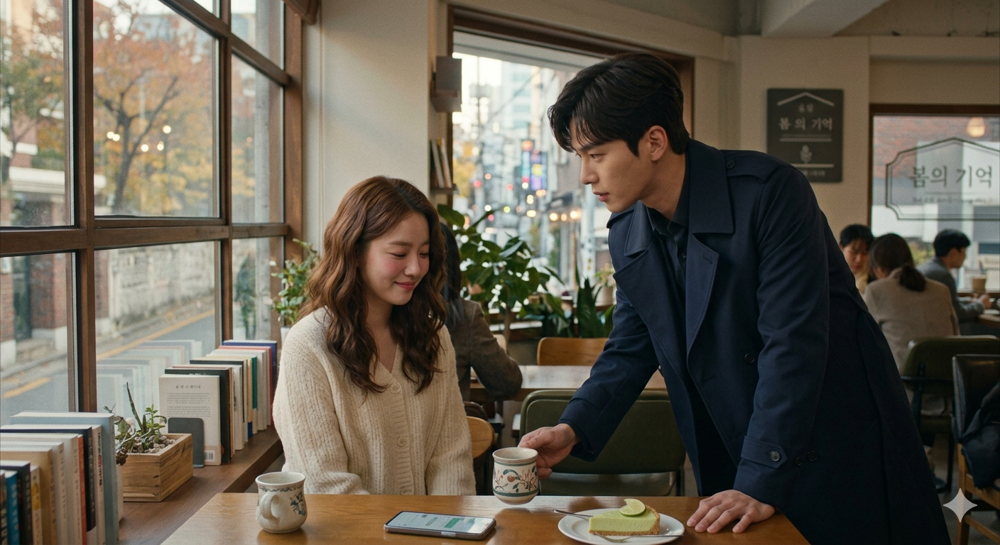
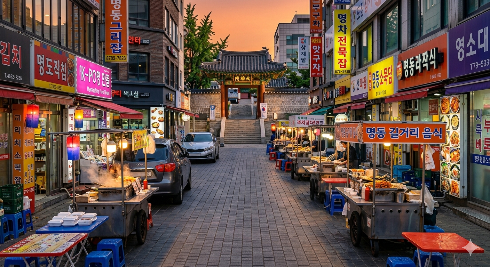

韓国料理作り
韓国の食文化に惹かれ、最近では食べるだけでなく自分で作る時間も大切にしています。
本場の味を自宅で再現できるよう、日々試行錯誤しながらキッチンに立つのが日課です。


Web制作を学習中のエンジニアです。
はじめまして。
現在HTML・CSS・JavaScriptを中心に学習しています。
ユーザーにとって見やすく、使いやすいサイト制作を目指しています。
将来的には実務で活躍できるエンジニアになりたいと考えています。

韓国の食文化に惹かれ、最近では食べるだけでなく自分で作る時間も大切にしています。
本場の味を自宅で再現できるよう、日々試行錯誤しながらキッチンに立つのが日課です。

週末は韓国ドラマを鑑賞しながら、ゆったりとした時間を過ごすのが習慣です。
特に『応答せよ1988』は、皆様にぜひお勧めしたいほど心に残っている大切な作品です。

韓国ならではの美しい景色を求めて各地を訪れ、現地の食文化に触れる時間を大切にしています。
お気に入りの風景をカメラで切り取りながら、思い出を形に残す旅を満喫しています。